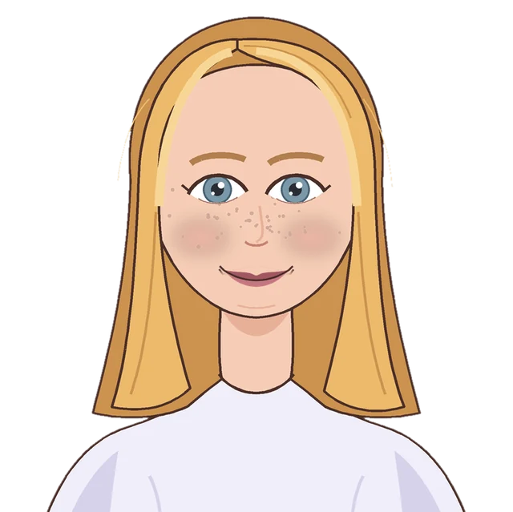

Three quick taps — and the first step on your card adjusts to you.
Saved with your verdict — no spam, and we never sell your email.
We can’t give this inside info to everyone. It helps our clients get ahead in the job market. If everyone had it, it wouldn’t help anymore.
Tap any row to see that job’s full verdict — facts, first step, numbers.
Saved with your verdict — no spam, and we never sell your email.
We can’t give this inside info to everyone. It helps our clients get ahead in the job market. If everyone had it, it wouldn’t help anymore.
Every check uses real job posts, platform rules, official job data (BLS) and hiring reports. We never guess. We build the most-wanted checks first — and yours just moved up the list!
Where do we send your verdict?
Your email goes straight to our research queue — that’s the only thing we use it for.
PathCheck is brand new — we're still testing it. You can pay once the first test group starts. Did you run the check? Then your email and answers are already saved. You'll be first in line! No charge today, honest.
Inside the report — the most important facts from 46 real job posts, made for you:
We can’t give this inside info to everyone. It helps our clients get ahead in the job market. If everyone had it, it wouldn’t help anymore.
Want it free instead? Share your personal link from the verdict card. When 1 person finishes a check through it, your report unlocks.
No card? Use “Ask your parents” on your card — it sends them your verdict and the payment link.
Copy this letter and send it the way your family usually talks — text, email, messenger. It has your verdict and asks for the payment. Your parents see the plan too. That's the idea!